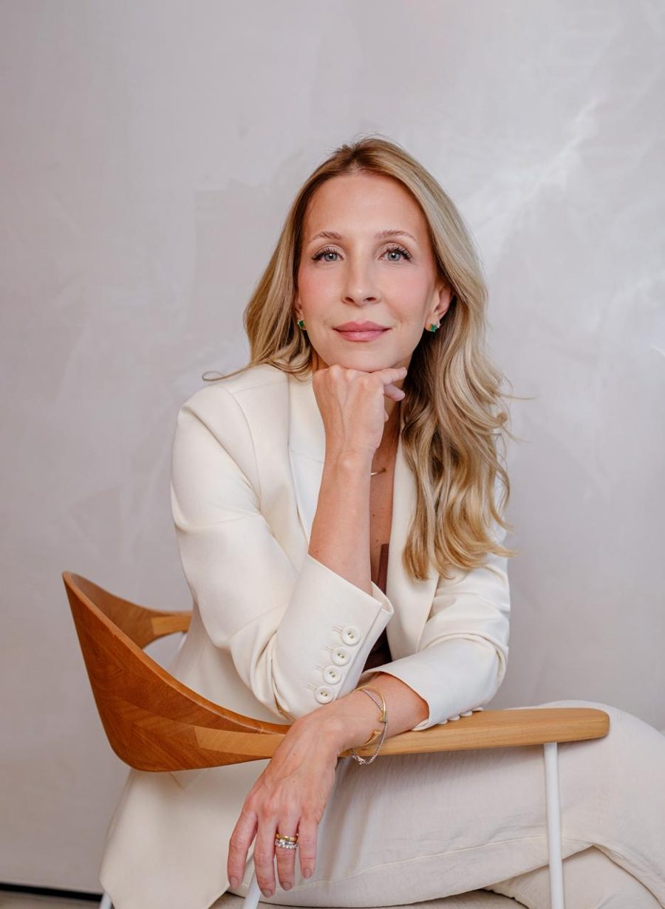
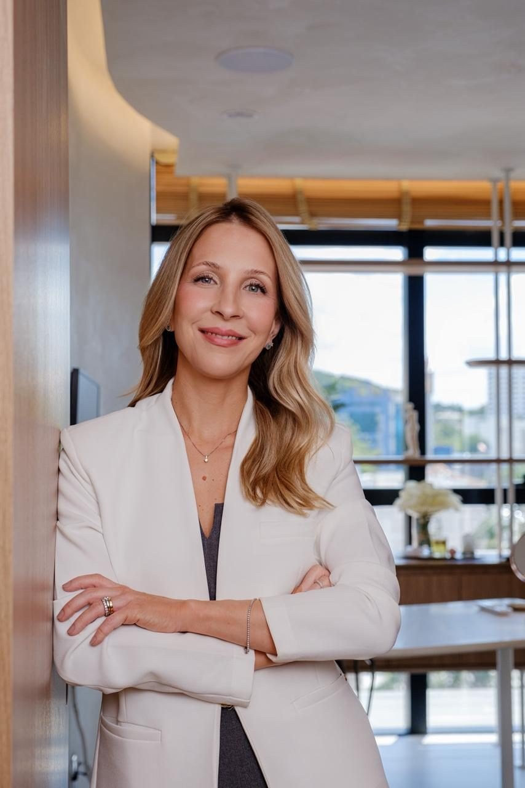

Prevenção e Nutrologia · Blumenau/SC
Dra.Rafaela
Medicina feita com tempo, escuta e ciência para você viver bem por muitos anos.
Prevenção e Nutrologia · Blumenau/SC
Medicina feita com tempo, escuta e ciência para você viver bem por muitos anos.

A abordagem
Saúde não se resolve em dez minutos. Ela se constrói com acompanhamento, consulta após consulta.
A nutrologia olha para como o seu corpo usa os nutrientes e para os hábitos que sustentam a sua saúde. A Dra. Rafaela une essa visão à medicina preventiva para acompanhar você de forma contínua, com exames e metas revistos a cada retorno.
Cada plano considera o conjunto da sua rotina, e não um ponto isolado.
Orientação médica sobre nutrientes e deficiências.
Atividade física ajustada à sua fase de vida.
Descanso como parte do tratamento.
Rotina e saúde mental no mesmo olhar.
Vínculos sociais também protegem a saúde.

No consultório
Dúvidas frequentes
É o médico que avalia e trata condições ligadas à nutrição: deficiências de vitaminas e minerais, excesso de peso, alterações metabólicas e a relação entre alimentação e doenças.
Se você tiver exames recentes, traga. Caso contrário, a Dra. Rafaela solicita o que for necessário depois da avaliação.
A equipe da clínica informa pelo WhatsApp como funciona a avaliação de composição corporal e os valores.
Toque em qualquer botão desta página. Você fala direto com a equipe da clínica pelo WhatsApp.